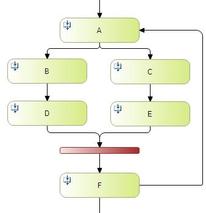

Then, by clicking the same button again, you will be able to select the object.
Strong Synchronization: It is useful when the task has and-join predecessors. It demands the same number of instances in each synchronized task.

E.g.: you start synchronizing from A.
In task F you return to task A.
B and C are created. C and E are completed. B remains in execution.
And-join will find:
- An E instance (created in the 2nd Execution)
- A D instance (created in the 1st execution)
- It will assume the tasks as synchronized and will create the F instance.
‘Strong synchronization’ demands the existence of the same number of instances for each synchronized task. In this case, to create the F task in the second synchronization, it will demand the existence of two instances for D and E.
Skip Predecessors: It automaticaly completes all predecessors tasks.
Processing Mode: It allows selecting how to process the batch activities by the engine .This property admits the following values:
- Synchronous: default value. The engine waits for the execution of the procedure associated with the batch task. This is the usual behavior of the batch tasks in previous versions.
- Asynchronous: the engine starts the execution of the procedure associated to the batch task, but it does not wait until this execution is completed. The execution of the process instance just stops. The procedure is responsible for completing the workitem programmatically before finishing, so that the engine can continue with the process execution. Besides, in GeneXus, to be able to use this execution mode, the procedure must be main and must have the “Call Protocol” property with “Command Line” value.
Calendar: It allows determining the calendar with which the time will be counted through a dialog that shows all the calendars defined on the Knowledge Base (more info). If we don´t specify a calendar, the process will be continuous, 24 x 7. By default, the calendar will be the process calendar if applicable.
Metadata: It allows adding metadata to the activity.
History Security
Security in history: It allows constraining the historical information on the task that can be accessed by users when displaying the process history. The admitted values are:
- All roles: any user accessing the process history can see the task.
- None: no user can see the task in the process history.
- Task roles: only the users with the role to execute the task can see it in the history.
- Selected roles: it allows specifying a list of roles enabled to see the task in the history.
Adaptability
Undoable: It allows process administrator users to undo the execution of tasks workitems from GXflow Client.
Compensation Application: only visible when the “Undoable” property has “True” value, it allows establishing a procedure to be executed each time a task workitem is undone. In GeneXus, this procedure must be created in the same way as a batch task.
Selectable for ad-Hoc: allows setting up whether the task appears in the successor tasks selection dialog shown on completing an ad-hoc task.
Task Dimension
Dimension: allows setting up whether the activity is simple (“escalate” option) or if it admits multiple workitems in parallel (“vector” option).
Dimension Type: only visible when Dimension has the “vector” value, it allows setting up whether the number of workitems to be created is fixed (“fixed” option) or dynamic (“Relevant Data” option).
Fixed number: only visible when Dimension type has the "fixed" value. It allows specifying the number of workitems that have to be created.
Take Number from Relevant Data: only visible when the “Relevant Data” option is selected in “Dimension Type”, it allows specifying the relevant data that will contain the number of workitems to be created. When the workflow engine creates multiple workitems of a task, it assigns an index to each. E.g.: if 2 parallel workitems are created, one of them will be assigned index value 1 and the other index value 2. This index is accessible through the WorkflowWorkitem data type Index property.
An example of the use of this property occurs when each workitem must receive a different value of a specific relevant data. In this case, you can have an array of relevant data and add a value to it for each parallel workitem to be created. Then, you can use the workitem index to obtain the value corresponding to this workitem from the relevant data array.
Event Handling
On assignment change: Change in the assignment of a task instance.
On deadline: Deadline of an instance (process or task instance)
On warning: Warning of an instance (process or task instance)
On new instance: A new instance was created (process or task instance)
On priority change: Change in the priority of an instance (Process or task instance)
On resource non available: There are no resources (users) available to process the task